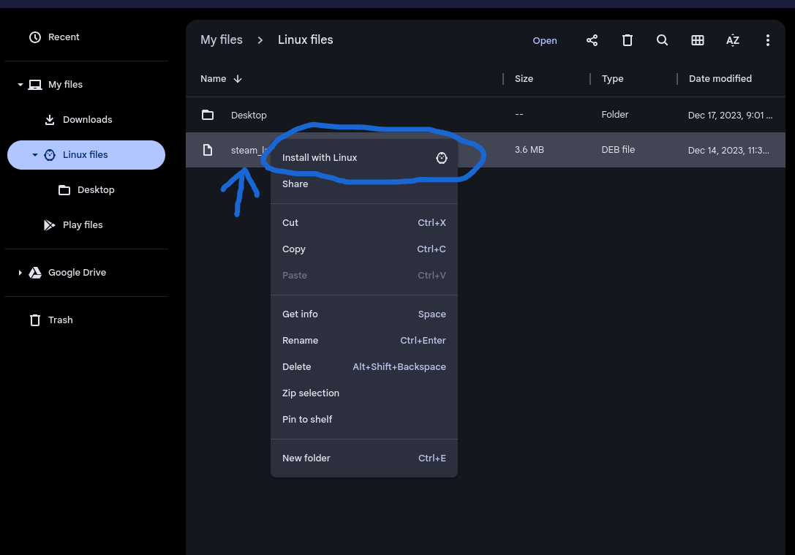

Warning: This is an old guide that will not work in most cases. If you are using Debian 11, this guide will work but it won’t work on Debian 12. If you are on Debian 12, follow this Steam install guide.
Warning 2: Do not use or follow this guide if you are planning to use a school or organization owned device! Do not use or follow this guide on a device you do not have permission to modify!
This is a legacy guide, it only works if your Linux VM is on Debian 11. Find this by typing into the terminal, "lsb_release -a", if it says Debian 12 DO NOT FOLLOW THIS GUIDE. This guide will help you install desktop Steam onto your Chromebook, it is also the only way to install Steam on your Chromebook if you have less than 8GB of RAM and 128GB of storage.
Step 1: Go to Steam Download Page using Firefox and download the Steam setup file, make sure you remember what folder the file is saved to. The Steam download page automatically detect the operating system so, to get the proper install version you must use Firefox, if you use Chrome the Steam download page will give you the wrong install file or not even let you download the install file at all.
Step 2: Open the Chrome OS file manager ❪app with the blue folder icon named, "Files"❫, and find the donwload file under "Linux Files"
Step 3: Make sure the Steam install file ends with, ".deb", and if so right-click it ❪tap the trackpad with 2 fingers at the same time❫ and click, "Install with Linux". If the file ends with any other set of letters or you don't have the option to install with Linux, follow step 3b.
Step 3b: ❪Skip this step if the file you downloaded ends with, ".deb"❫.
Step 4: Once the install is complete, press the search key or the white circle at the bottom-left corner of the screen. Look for an app group called, "Linux Apps" and click it. Find a blue icon with a robot part that says, "Steam" and click on it. This may take some time but a window will pop-up.
Step 5: The window that will pop-up is going to be a terminal, but not the aforementioned one. The terminal will ask you if you want to install and configure various things. Press enter. Afterwards, just type, "y" and press enter whenever it prompts for it.
Important: Make sure that your Chromebook stays open, powered on, and conected to a suitable internet connection for the duration of the setup. Failure to provide these conditions for the setup may cause the Steam installation to be corrupted, or your Linux VM to be corrupted.
Step 6: Launch Steam and follow the prompts to finish the setup. If you don't already have a Steam account you can create a new one for free.
And that's Steam installed, now you just need games, so we recommend Combat Masters, and Muck. If you have recommendations for more games that take less than 10 GB of storage and are supported by Linux, ❪shown by the Steam icon under supported operating systems❫, email us at #